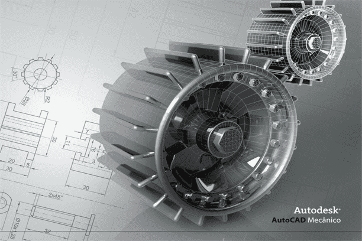

This is a course intended for those who have passed through the Microsoft specialist program stage.
Desktop publishing serves to enhance your understanding of software applications mostly used in 21st century offices.
It will expose you to printing, scanning, and online documentation.
If you passed through the desktop publishing phase before enrolling
for a graphics' design course,
then you would have decidedly set before you a ladder to a successful IT career path in the long run.
Are you willing to take a leap of faith to see how well you would perfom?
Then it's high time
you started the journey, learning from experienced and friendly instructors.
-
We don't just teach, we
impart to transform.

AutoCAD is coined from the abbreviation of the word Automatic (Auto) and the Acronym
for Computer-Aided Design (CAD); altogether the composition of the word AutoCAD was formulated.
In simplicity, AutoCAD is interpreted to mean Automatic Computer-Aided Design.
It allows a user to perform technical drawings or modifications of such, using a computer screen and sets
of commands presented to him by the software. As a result, it eliminates the need for the primitive process
of manual drawing with ruler, pencil and paper.
It is mostly used by electrical engineers, civil engineers, Architects, Mechanical engineers, wood workers
and technicians alike, to communicate proposed ideas.
-
We don't just teach, we
impart to transform.

Front end Web development/ UI/UX DESIGN is sometimes considered a subject of immense complexity, perhaps, due to
its algorithmic nature which requires mathematical precision.
We are happy
to tell you that it is not that hard as you may think it is. With our “1 + 1” method of
teaching, you too can conquer your fears and become a talented web developer.
All we would ask of you is a strong desire and tenacity, and soon enough you will come to
realize that websites are just clusters of virtual offices and workshops where folks display merchandize and services
.
The kind of goods you sell or services you render determines the kind of customers you get,
and your skill in salesmanship will determine your overall volume of sales. That’s it!
-
We don't just teach, we
impart to transform.
Revit Architecture, unlike its AutoCAD counterpart is used mostly by draftsmen
whose professions are related to Architectural, Mechanical, Civil and Structural drafting.
There is also Revit MEP
for Mechanical, Electrical and Piping Engineers. Revit is quite simpler to use than AutoCAD.
Thanks to its huge library of already designed components. However, the software requires a machine
with optimum processor, high physical memory and graphics card for smooth performance.
One of the benefits of revit is its instantaneous conversion of
plan drawings to a 3-Dimenional model. But there is a demand for AutoCAD drafters than Revit users.
-
We don't just teach, we
impart to transform.
It may interest you to know that graphics design is fun and engaging.
Enroll today and observe how we would transform you to a professional graphics
designer in a matter of days.
We will walk you through the generic graphics design software applications like Corel Draw and
photoshop, were you will learn the art of digital designing.
You will also master the techniques of removing imperfections from images and fine-tuning them to the proper degree.
Not only will we teach you how to design, but you will, as well, be taught the concept of visualization,
the techniques of color combination with professionalism, and how to composite raster images -
We don't just teach, we
impart to transform.
Do you want to start a career in computing in order to grab that job, or perhaps,
to own a business start-up someday?
Then, this program is for you. It is meant for those who
do not have prior knowledge of computing. You will be taught the fundamentals to computing, ample
reasons for becoming a computer literate in this 21st century, and the vast opportunity that lie in sight for
every computer literate.
You will also learn touch typing, keyboard mastery and computer jargon.
On completing this course, you would have learned and understood why you should be computer literate irrespective
of your age, gender and financial status. Besides, you will be able to apply this skill in solving real-life problem.
-
We don't just teach, we
impart to transform.
Revit Architecture, unlike its AutoCAD counterpart is used mostly by draftsmen
whose professions are related to Architectural, Mechanical, Civil and Structural drafting.
There is also Revit MEP
for Mechanical, Electrical and Piping Engineers. Revit is quite simpler to use than AutoCAD.
Thanks to its huge library of already designed components. However, the software requires a machine
with optimum processor, high physical memory and graphics card for smooth performance.
One of the benefits of revit is its instantaneous conversion of
plan drawings to a 3-Dimenional model. But there is a demand for AutoCAD drafters than Revit users.
-
We don't just teach, we
impart to transform.
What is Data Analysis?
According to Wikipedia(encyclopedia):
"Data analysis is the process of inspecting, cleansing, transforming,
and modelling data with the goal of discovering useful information, informing conclusions,
and supporting decision-making.
In today's business world, data analysis plays a role
in ... helping businesses operate more effectively"
That’s what we are exceedingly efficient at doing with advanced Excel's functions and
techniques. Utilizing Macro, Pivot table, Scenerios, Goal Seek, and many more,
we will practically show you how to make projections based on available
data set in order to arrive at a scientifically accurate decision.
We don't just teach, we
impart to transform.

This is a co-curricular initiative that combines ICT with STEAM (Science,
Technology, Engineering, Art and Mathematics) programming. It is structured to
facilitate critical thinking, logical reasoning and problem-solving ability in students
through a fun and engaging training approach. The programs serve to enhance
their IQ, intellectual capacity and brain power, inspiring them
with initiative and creativity. The club is intended for ages 5 -18.
It deals with the concept of Circuits’ functionality, that is coding with
a computer and uploading the Instructions on a hardware (board/panel) to enable it perform the
programmed function. For instance, a fan rotates because it
has a board/panel uploaded with instructions that tell it to rotate when powered.
We don't just teach, we
impart to transform.